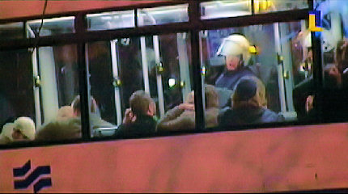
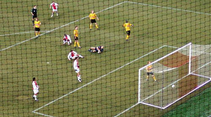

|
Ajax - Roda JC (4-1 n.v.) 22 maart 2006
|
De wedstrijd begint om 21.00 uur in een halfgevuld stadion.
Kimmie mag in de VIP-loge. Neutrale sjaal dan maar....
Na 10 minuten belandt een lange voorzet van Rosales...
...op het hoofd van Huntelaar die goed inkopt. Kujovic redt echter uitstekend.
Cheyanne lukte het om de ArenA binnen te komen. Van de ruim 1300
meegereisde Roda-supporters werden er 200 door de politie opgepakt.

De hetze tegen Rodasupporters neemt ongekende proporties aan.
Ja, je bent nummer één :)
Het uitvak met gratis net voor je gezicht.
Maduro wil terugspelen op Stekelenburg en verspeelt daarbij de bal aan
Oper die koel afrondt: 0-1, (61').
De vreugde bij Oper die pas op het laatste moment speelfit werd verklaard.

Roda lijkt de wedstrijd te gaan winnen maar in de laatste seconden van de
overdreven vier minuten extra tijd scoort Huntelaar met een prachtige maar
"lucky" omhaal: 1-1, (94').
De selectie pompt zich op voor de verlenging.
Deze loopt uit op een drama. Roda zakt compleet in en reeds in de 99e
minuut scoort Babel uit een assist van Charisteas 2-1.
Treffer Sonko wordt afgekeurd wegens buitenspel.
Foto: sv.online.info

Game over, 3-1 door Babel uit een assist van Galasek, (106').
(Foto:SV)
Huntelaar tikt 4-1 binnen, (109'). Van de hemel in de hel.......
(Foto: SV)